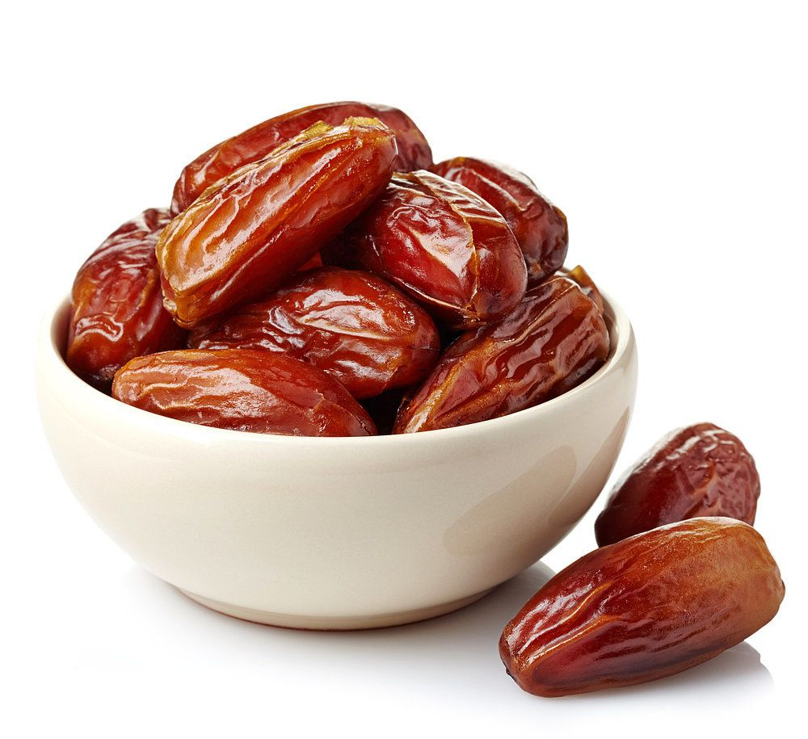
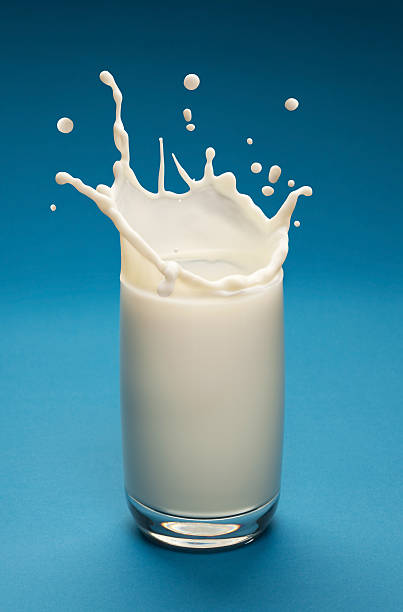
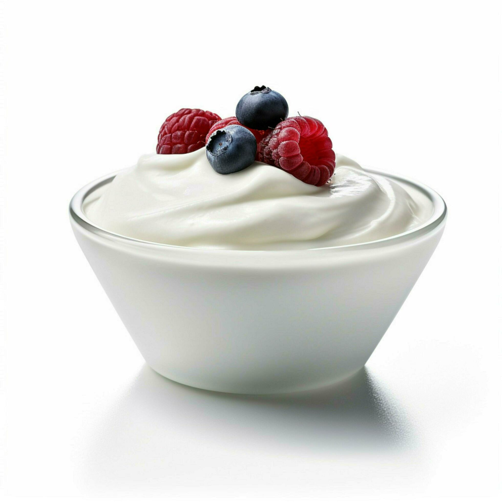
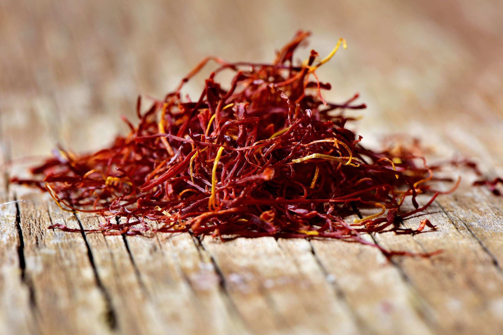
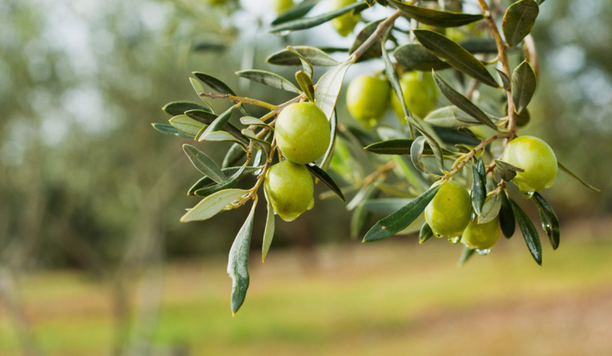

Dates
- Prophet ﷺ broke his fast with dates and water.
- Gives quick energy and strengthens the body.
- Rich in fiber and good for digestion.
- Hadith: Eating seven Ajwa dates protects from harm.

Milk
- Prophet ﷺ loved milk and praised Allah after drinking it.
- Strengthens bones and teeth.
- Improves skin and provides hydration.
- “Nothing suffices in place of food and drink except milk.”

Yogurt
- Prophet ﷺ ate yogurt with honey or water.
- Good for digestion and gut health.
- Strengthens bones and cools the body.
- Boosts immunity naturally.
Figs
- Mentioned in the Quran with olives (Surah At-Tin).
- Improves digestion and relieves constipation.
- Rich in vitamins and antioxidants.
- Strengthens heart and immunity.

Saffron
- Known during the Prophet’s era for healing uses.
- Improves mood and relaxation.
- Supports memory and concentration.
- Promotes calmness and vitality.

Olive
- Mentioned in Quran as a blessed tree.
- Improves heart health and lowers cholesterol.
- Nourishes skin and hair.
- “Eat olive oil and apply it.” — Prophet ﷺ

Honey
- Mentioned in Quran as a healing for mankind.
- Boosts immunity and fights infections.
- Soothes sore throats and aids digestion.
- “Use the two cures: honey and Quran.”

Barley
- Prophet ﷺ recommended barley soup (Talbina).
- Improves heart health and lowers cholesterol.
- Helps ease sadness and grief.
- Rich in fiber and long-lasting energy.

Apple cider
- Prophet ﷺ said: “What an excellent condiment vinegar is!” (Muslim)
- Improves digestion and balances stomach acid.
- Controls blood sugar and supports heart health.
- Natural detox and antibacterial properties.